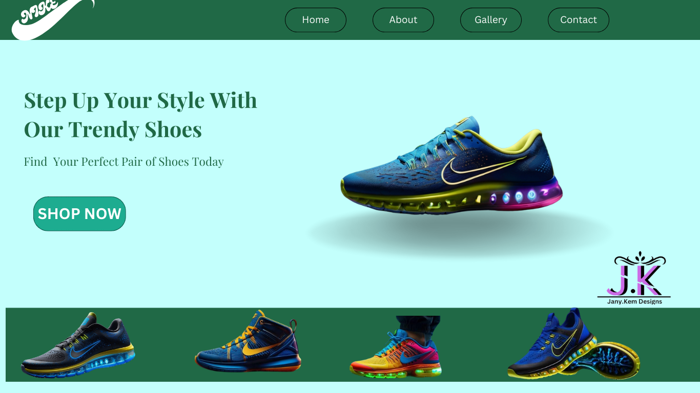
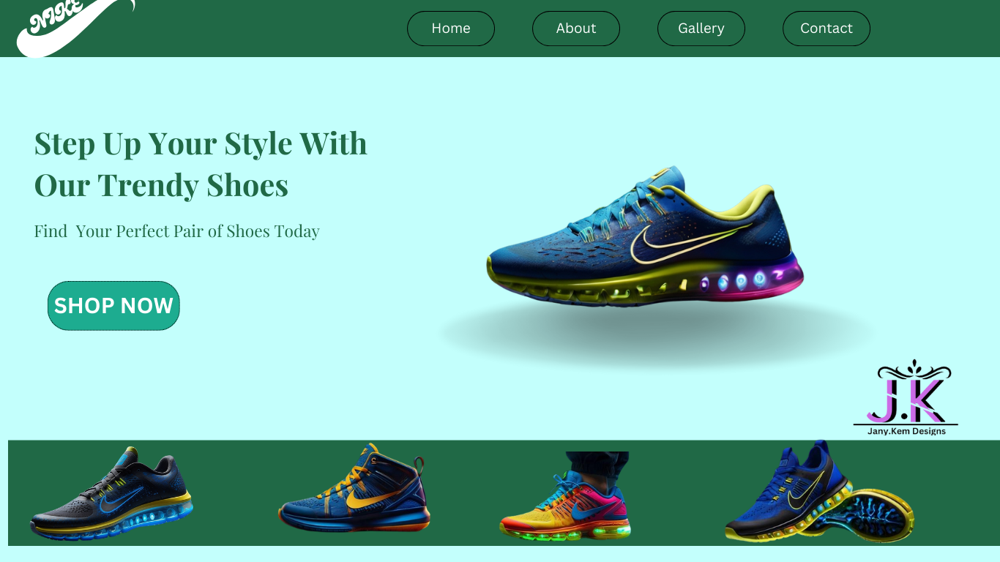
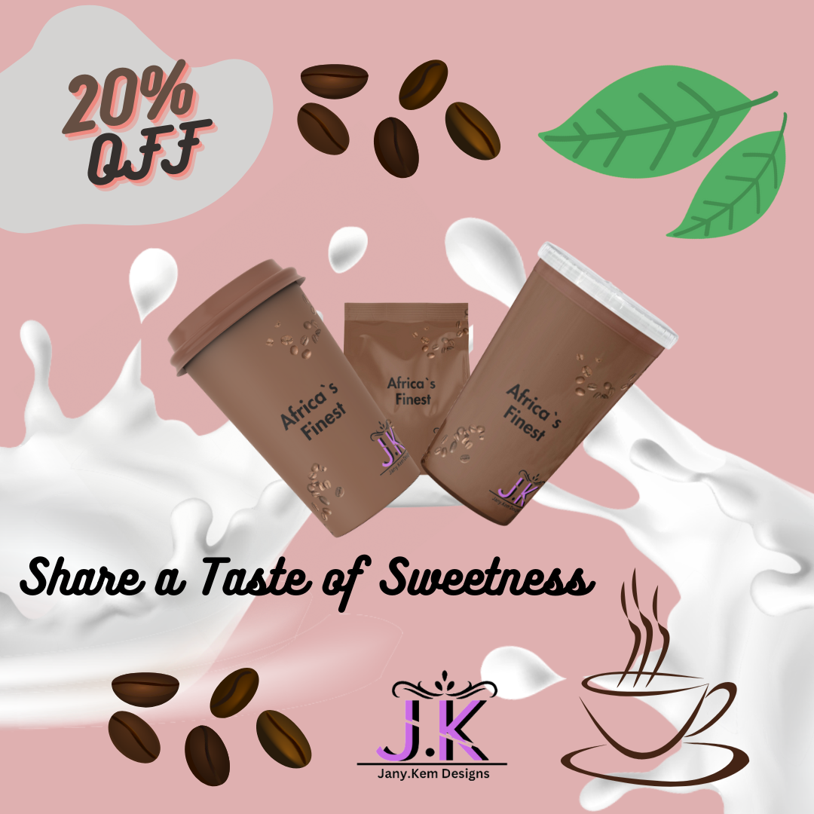
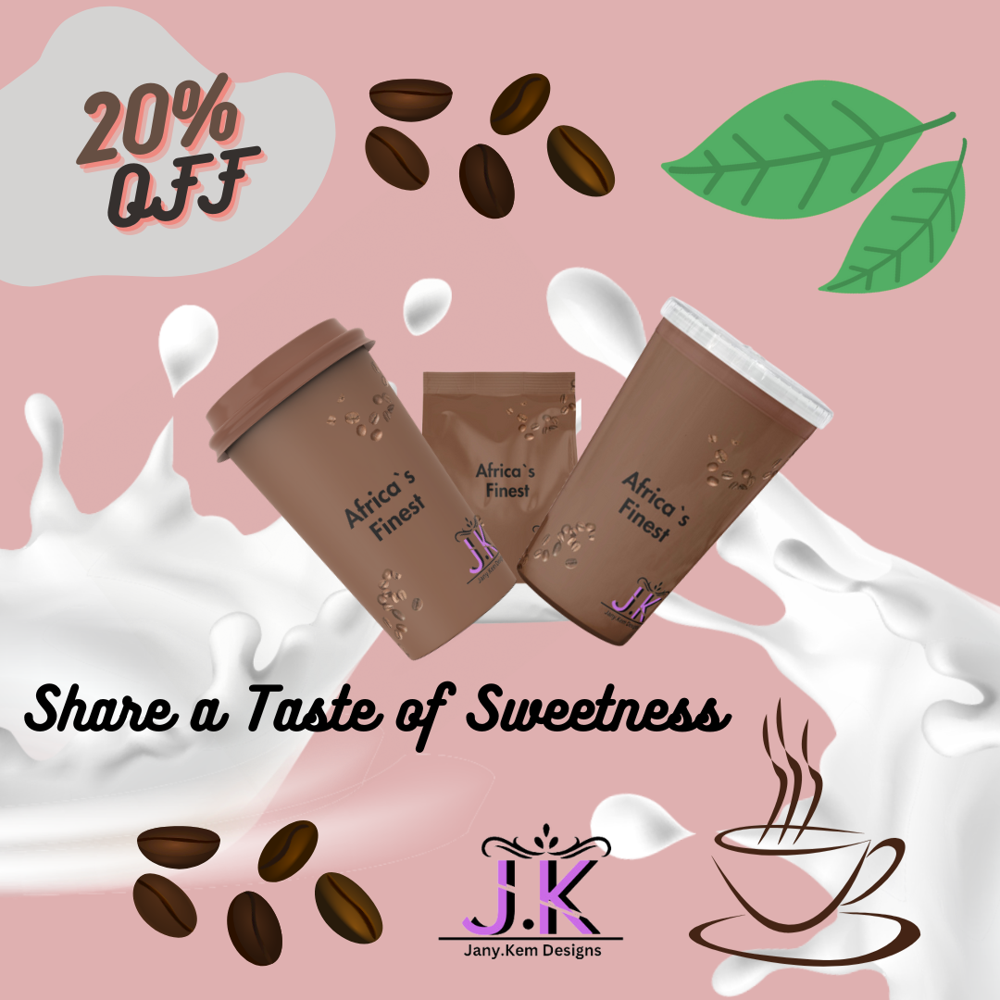

Janet is a freelancer with wide experience in health research, graphic design, transcription, digital marketing and content creation. I can work out of own initiative, willing to learn under any prevailing environment while giving the best input to the organization with little/ no supervision
.png) From sleek and modern designs to timeless classics, we design a diverse range of styles tailored to suit various industries and visions. Whether you're a startup seeking a memorable brand identity or an established business looking to refresh your image, we're here to bring your brand to life through captivating logos that leave a lasting impression. Dive in and discover the perfect logo to elevate your brand presence
Step into a world where innovation meets aesthetics, from sleek and intuitive interfaces to fully immersive user journeys. Whether you're a small business looking to establish your online presence or a corporation aiming to redefine digital engagement, dive in and discover how we can transform your digital vision into reality
From sleek and modern designs to timeless classics, we design a diverse range of styles tailored to suit various industries and visions. Whether you're a startup seeking a memorable brand identity or an established business looking to refresh your image, we're here to bring your brand to life through captivating logos that leave a lasting impression. Dive in and discover the perfect logo to elevate your brand presence
Step into a world where innovation meets aesthetics, from sleek and intuitive interfaces to fully immersive user journeys. Whether you're a small business looking to establish your online presence or a corporation aiming to redefine digital engagement, dive in and discover how we can transform your digital vision into reality
 Welcome to our social media advert design portfolio, where creativity meets strategy to captivate audiences and drive results. Explore a vibrant collection of eye-catching advertisements meticulously crafted to engage and inspire on digital platforms. From dynamic visuals to compelling copy, each advertisement in our portfolio is tailored to resonate with your target audience and achieve your marketing objectives. Whether you're aiming to increase brand awareness, drive conversions, or spark meaningful conversations, our portfolio showcases our expertise in crafting impactful social media adverts that make a lasting impression. Dive in and discover how we can elevate your online presence and help your business thrive in the digital age
Welcome to our social media advert design portfolio, where creativity meets strategy to captivate audiences and drive results. Explore a vibrant collection of eye-catching advertisements meticulously crafted to engage and inspire on digital platforms. From dynamic visuals to compelling copy, each advertisement in our portfolio is tailored to resonate with your target audience and achieve your marketing objectives. Whether you're aiming to increase brand awareness, drive conversions, or spark meaningful conversations, our portfolio showcases our expertise in crafting impactful social media adverts that make a lasting impression. Dive in and discover how we can elevate your online presence and help your business thrive in the digital age
.png) Explore a vibrant collection of meticulously crafted mock-ups that bring characters and concepts to life with flair and authenticity. Whether you're a costume designer seeking inspiration or a production company in need of visual concepts, our portfolio offers a glimpse into the possibilities of costume design. Dive in and let your imagination take flight
Welcome to our beverage mock-up design portfolio, where creativity meets refreshment! From tantalizing packaging designs for craft brews to sleek labels for artisanal spirits, each mock-up is meticulously crafted to capture the essence and allure of the product. Whether you're a beverage brand seeking to elevate your visual identity or a marketing agency in need of captivating visuals for your campaigns, our portfolio offers a glimpse into the artistry and innovation behind our designs. Dive in and discover how we can quench your thirst for exceptional beverage branding
Explore a vibrant collection of meticulously crafted mock-ups that bring characters and concepts to life with flair and authenticity. Whether you're a costume designer seeking inspiration or a production company in need of visual concepts, our portfolio offers a glimpse into the possibilities of costume design. Dive in and let your imagination take flight
Welcome to our beverage mock-up design portfolio, where creativity meets refreshment! From tantalizing packaging designs for craft brews to sleek labels for artisanal spirits, each mock-up is meticulously crafted to capture the essence and allure of the product. Whether you're a beverage brand seeking to elevate your visual identity or a marketing agency in need of captivating visuals for your campaigns, our portfolio offers a glimpse into the artistry and innovation behind our designs. Dive in and discover how we can quench your thirst for exceptional beverage branding